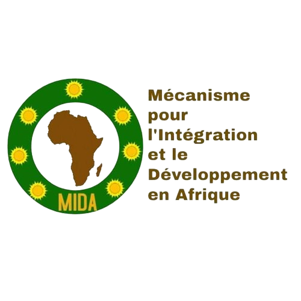

<!DOCTYPE html>
<html lang="fr">
<head>
    <meta charset="UTF-8">
    <meta name="viewport" content="width=device-width, initial-scale=1.0">
    <title>Information</title>
    <link rel="stylesheet" href="information.css">
</head>
<body>
    <header>
        <nav>
            <div class="logo">
                <a href="index.html"></a>
            </div>
            <ul>
                <li><a href="index.html">Accueil</a></li>
                <li><a href="blog.html">Blog</a></li>
               
                <li ><a href="information.html">Information</a></li>
                <li><a href="contact.html">Contact</a></li>
            </ul>
        </nav>
    </header>
    <div class="menu">
        <ul>
            <li><a href="#accueil">Accueil</a></li>
            <li><a href="#qui">QUI NOUS SOMMES</a></li>
            <li><a href="#organes">ORGANES</a></li>
            <li><a href="#axes">AXES STRATEGIQUE</a></li>
            <li><a href="#devenir">DEVENIR MEMBRE ET ACTIVITES</a></li>
            <li><a href="bog.html">MIDA MEDIA</a></li>
            <li><a href="#partenaire">PARTENAIRES</a></li>
            
        </ul>
      </div>
    <main>
       
     
      <h2 id="accueil">ACCUEIL</h2>
      <ul>
        <li class="li">Présentation et mot du Président du Conseil d’Administration du MIDA</li>
      </ul>
      <p>Comptable de formation, l’Ambassadeur Youssouf WELLINGTON est un activiste et leader panafricain. 
        C'est au tout début de l'année 2003, que ce comptable de formation, consultant en intégration et en 
        autonomisation des jeunes va de par son dynamisme et sa volonté de changement pour une Afrique 
        unie et prospère, se faire repérer par son tout premier mentor Monsieur OUFFOUE Brou Valentin, alors 
        Président de l'Union Nationale des Clubs d'Allemand de Côte d'Ivoire (UNACACI) qui le propulse à son 
        premier poste de responsabilité en qualité de Secrétaire en Charge des Relations Extérieures au sein de 
        cette structure et à d’autres postes de responsabilités jusqu’en 2010. Ces postes stratégiques lui 
        permettront de faire des plaidoyers auprès de l'État ivoirien, de plusieurs Etats africains et des 
        Institutions régionales, africaines et internationales. 
        En juin 2003, il intègre l'Association Ivoirienne pour le Bien-être Familial (AIBEF) qui est la section 
        ivoirienne de la Fédération Internationale du Planning Familial (IPPF). Pendant sa formation d'activiste, il 
        a eu l'honneur de rencontrer plusieurs décideurs Africains de notre « pays », l'Afrique. Ces fortes 
        personnalités lui font comprendre à quel point la jeunesse africaine appuyée par la femme, est le socle 
        d'une Afrique prospère et unie d’où la création en avril 1962 à Conakry par plusieurs pères fondateurs 
        de l’indépendance des Etats africains, du Mouvement Panafricain de la Jeunesse (MPJ) devenu Union 
        Panafricaine de la Jeunesse (UPJ) sous décision de la Conférence de l’Union Africaine en 2006 à Banjul. 
        Après l’inhumation en 2009 de son père au Nigeria et de celle de sa fiancée en 2010 en Côte d’Ivoire, 
        une période marquante de sa vie, il décide d’apporter sa pierre à une Afrique des peuples".
        La suite on la connaît : la création de l’actuel Mécanisme pour l’Intégration et le Développement en 
        Afrique (MIDA) anciennement Nouvelle Impulsion des Générations Africaines pour le Futur (NIGAF) et 
        ses différentes actions dans tout le continent. 
        " Nul ne pourra empêcher l'épanouissement d'un peuple lorsque ce peuple est soudé, chaque 
        génération ayant son combat nous devons impacter la société par le changement et notre génération 
        par la vision positive. Merci aux Pères Fondateurs de l'Afrique.
        Paroles de l’Ambassadeur Youssouf WELLINGTON
        </p>
        <h2 id="qui">QUI NOUS SOMME</h2>
        <ul>
            <li class="li">BREF PRESENTATION DU MIDA (ONG)</li>
        </ul>

        <p>Créée en février 2013 à Yopougon, Abidjan, Côte d’Ivoire, sous le nom Association des Générations 
            Conscientes (A.G.C), après avoir été renommée Jung Neue (JN) en 2014, lors d’une Assemblée Générale,
            le 11 Juin 2015, elle devient Nouvelle Impulsion des Générations Africaines pour le Futur (NIGAF).
            Ensuite une reforme est lancée lors de sa 4ième conférence du 27 au 28 octobre 2020 à Ouagadougou, 
            qui permettra de la renommée MIDA. Elle est la faîtière des leaders africains et de la diaspora et est 
            représentée aujourd’hui dans plus de 68 pays par des personnes morale et/ou physique. 
            Depuis août 2016, le MIDA (ONG) est membre associé en charge de l’intégration à l’Union Panafricaine 
            de la Jeunesse (UPJ). L’UPJ est la faîtière des organisations nationales de jeunesse des Etats membres de 
            l’Union Africaine (UA) dénommée en majorité Conseil National de la Jeunesse (CNJ).
            Pour la facilitation de l’atteinte de sa vision et de son objectif, le PCA du MIDA a créé en mars 2024, une 
            entreprise sociale dénommée MIDA qui se charge de la mobilisation des ressources humaines, 
            logistiques et financières des différents organes du MIDA (ONG).</p>
    
    <ul>
        <li class="li">OBJECTIF ET VISION DU MIDA</li>
    </ul>
    <p>Par les articles 08 et 09 de ses statuts, le MIDA a pour vision de bâtir une Afrique des Peuples citoyens
        intégrés pour le développement inclusif et durable de l’Afrique. Il a pour objectif de promouvoir auprès 
        des citoyens enfants, jeunes, femmes et vulnérables de Côte d’Ivoire et d’Afrique et sa diaspora, les 
        plans et les stratégies de développement en Afrique, au niveau national, régional, continental et 
        international.
    </p>
    <h2 id="organes">ORGANES</h2>
    <p>Les organes du MIDA sont définis de l’article 15 à 19 de ses statuts.</p>
    <ul>
        <li class="li">ASSEMBLEE GENERALE (CONFERENCE DU MIDA)</li>
    </ul>
    <p>
        Dans l’article 16, la Conférence du MIDA (COMIDA) est l’organe suprême du MIDA. Elle est l’Assemblée 
Générale de tous les membres et responsables du MIDA à jour de leurs cotisations. Elle se réunit 
(présentiel et/ou webinaire) en session électif chaque trois (3) ans, en session ordinaire chaque un (1) an 
et en session extraordinaire sur convocation du Secrétariat Général du Bureau Exécutif et/ou de la
Présidence du Conseil d’Administration. Elle se réunit et décide et/ou recommande au minimum au 2/3 
de ses membres à jour de leurs cotisations. Les invitations à l’AG doivent parvenir aux différents 
participants au moins soixante (60) jours avant l’AG et les documents de travail doivent parvenir aux 
participants au moins vingt-un (21) jours avant les assises. La Conférence du MIDA (COMIDA)/
Assemblée Générale (A.G) et les différents organes/entités du MIDA sont présidés par le Président du 
Conseil d’Administration du MIDA et sa signature dans un délai maximum de soixante (60) jours met en 
application les décisions, ou dans un délai maximum de six (06) mois pour des sujets relatifs au 
fonctionnement et/ou au financement afin d’organiser des consultations en Session Extraordinaire avec 
des personnes accrédités par la Présidence du Conseil d’Administration. Dans ce contexte, les décisions 
sont automatiquement appelées recommandations. En cas d’empêchement et/ou d’absence, 
Conférence du MIDA (COMIDA)/ Assemblée Générale (A.G) et les différents organes/entités sont 
présidés par tout autres responsables du MIDA à jour de ses cotisations et accréditées par le Président du Conseil d’Administration en mentionnant ses prérogatives. Avec l’accord par voie administrative du 
C.A, les différents organes peuvent travailler avec une ordonnance qui aura une validité de six (6) mois.
La Conférence a pour attributions :
a) La définition de la politique générale, des axes stratégiques et l’Agenda du MIDA sous l’ordre du 
jour du Président du Conseil d’Administration ;
b) L’examen des rapports des autres organes du MIDA ;
c) La ratification des adhésions, suspension ou exclusion des Membres ;
d) L’approbation ou l’amendement des documents statutaires du MIDA après proposition du 
Président du Conseil d’Administration ;
e) Le choix des sièges et Bureaux de Liaison ;
f) L’élection du Secrétariat Général et du Conseil d’Audit et de Discipline ;
g) L’examen de toute autre question dont il décide de se saisir en collaboration avec le Président du 
Conseil d’Administration.
Peuvent être invités à la Conférence (A.G) en qualité de panélistes, d’invités spéciaux ou 
observateurs les Représentants des familles des Présidents(e)s d’Honneur à titre posthume ; les Chefs 
d’États et de Gouvernement des Pays des Président(e)s d’Honneur à titre posthume ou leurs 
Représentants ; les représentants de l’Union Africaine, des Communautés Économiques et des 
Mécanismes Régionaux, des Organisations de Jeunesse Amies, des Organismes du Système des Nations 
Unies ; d’éminentes Personnalités, des experts et des personnes ressources. La conférence est un cadre 
d’échange pour les leaders des enfants, adolescents, des jeunes, des femmes et vulnérables en vue 
d’une prise de décisions et/ou d’actions pour impacter un changement réel en Afrique. La Conférence
du MIDA se déroule chaque année dans un pays africain soit en Session : <br>
a) Ordinaire avec les responsables des organes du MIDA à jour de leurs cotisations, les experts, les 
institutions régionales et africaines, les partenaires au développement, une (01) fois chaque 
année dans la troisième semaine du mois de juin dans le cadre de la Journée de l’Enfant Africain 
(16 juin), de la Journée Africaine de l’Intégration (11 juillet), de la Journée Africaine de la Femme 
(31 juillet), de la Journée Internationale de la Jeunesse (12 août) et toujours en prélude à la 
deuxième Conférence ordinaire des Chefs d’États et de Gouvernement de l’UA et des CER. <br>
b) Elective chaque trois (03) ans, juste après la session ordinaire de l’année en cours avec les 
différents membres du MIDA. En cas d’absence, ces personnes pourront donner une procuration 
de vote et une personne ne peut avoir plus de deux (02) voix. <br>
c) Extraordinaire à la demande du Président du Conseil d’Administration et/ou de la Secrétaire 
Générale.

    </p>

    <ul>
        <li class="li">CONSEIL D’ADMINISTRATION DU MIDA</li>
    </ul>
    <p>Dans l’article 17, le Conseil d’Administration (C.A) est l’organe de décision entre chaque AG en session 
        électif. Le C.A est garant de la mise en œuvre de la vision et l’objectif du MIDA. Il se réunit (présentiel 
        et/ou webinaire) une (1) fois par an lors de l’AG en session ordinaire, pour le bilan annuel et les prises 
        de décisions selon les réalités du moment. Le Conseil d’Administration et ses entités sont présidés par le 
        Président-Fondateur du MIDA, qui est un membre fondateur et désigné par ses pairs, qui devient/est devenu le Président du Conseil d’Administration du MIDA. Le Conseil d’Administration (C.A) décide par 
        consensus, à défaut au minimum au 2/3 de ses membres à jour de leurs cotisations et regroupe tous les 
        membres fondateurs, le Cabinet du Président du Conseil d’Administration et les Coordinations 
        Générales des autres entités du Conseil d’Administration, les responsables du Secrétariat Général du 
        Bureau Exécutif et les neuf (9) membres du Commissariat aux Comptes, à jour de leurs cotisations. Le 
        Président du Conseil d’Administration du MIDA peut prendre des décisions, selon les réalités du 
        moment sur le fonctionnement du MIDA ou après recommandation du Conseil d’Administration et/ou 
        vote de la Conférence. Lors des décisions, l’arbitrage du Président du Conseil d’Administration est 
        déterminant pour sa validation, en sa qualité de premier responsable de la vision et de l’objectif du 
        MIDA. Les entités du Conseil d’Administration (C.A) sont des organes et sont :
        </p>
        <ul>
            <li class="li">Cabinet du/de la Président(e) du Conseil d’Administration (CAB-PCA)</li>
        </ul>
        <p>Dans l’article 17 à son alinéa 1, les Membres du Cabinet du Président du Conseil d’Administration
            agissent conformément aux pouvoirs qui leurs sont délégués par le Président. Ils sont nommés aux 
            différents postes de responsabilités du MIDA au maximum à deux (2) postes, à chaque fois que le 
            Président en verra la nécessité. Hors les membres de la Direction Exécutive pour la gestion des deux 
            cent quatre-vingt-sept (287) zones d’Etat et des cent cinquante-trois (153) zones de sa diaspora 
            regroupée au sein de la FUA, le Cabinet du Président du Conseil d’Administration est composé de 
            soixante (60) membres au maximum : <br>
          <i>a-</i> Un(e) Directeur(trice) de Cabinet appuyé(e) par huit Administrateurs(trices) Permanents(es) en 
            charge chacun(e) de l’un des sièges du MIDA (Social ; Conseil d’Administration ; Diaspora ; 
            Australe ; Centrale ; Est ; Nord et Ouest ; <br>
           <i>b-</i> Des Représentants et/ou Représentants Spéciaux ; <br>
          <i>c-</i> Une Direction de la Planification, de l’Administration, des Finances et du Développement du 
            Capital Humain (DPAFDCH) composée d’un(e) Directeur(trice) appuyé(e) par un(e) 
            Directeur(trice) de la Planification, de l’Administration et des Finances avec deux (2) Chargés(es) 
            à la Planification, deux (2) Responsables Administratif et Financier, un(e) Contrôleur(trôleuse) 
            Financier et un(e) Chargé(e) de Suivi et Évaluation ; et appuyé(e) par un(e) Directeur(trice) du 
            Développement du Capital Humain avec trois (3) Administrateurs(trices) Programme Enfant, 
            trois (3) Administrateurs(trices) Programme Jeune, deux (02) Administrateurs(trices) Programme 
            Femme, deux (2) Administrateurs(trices) Programme Personnes Vunérables, et un (01) 
            Administrateur(trice) Programme troisième âge ; et appuyé(e) par un(e) Chargé(e) de 
            Communication ; <br>
           <i>d-</i> Une Direction de la Diplomatie, du Protocole et de la Sécurité (DPS) composée d’un(e) 
            Directeur(trice) appuyé(e) par un(e) Directeur(trice) Adjoint(e) avec un(e) Chargé(e) des 
            Relations Internationales, un(e) Chargé(e) d’Investissement et de deux (2) Chargé(e) du 
            Protocole et de la Sécurité ; <br>
           <b>e-</b> Deux Assistants(es) du/de la Président(e) du Conseil d’Administration. 
            </p>
            <ul>
                <li class="li">Comité des Représentants des Président(e)s d’Honneur à Titre Posthume (COREP-HTP)</li>
            </ul>
            <p>Dans l’article 17 à son alinéa 2, le Comité des Représentants des Président(e)s d’Honneur à Titre 
                Posthume est l’organe du MIDA qui permet d’honorer la mémoire des pères fondateurs de l’Afrique et 
                de certaines imminentes personnalités africaines et sa diaspora qui ont contribué à l’histoire de 
                l’Afrique et sa diaspora. Il est composé de deux Représentants de chacune des imminentes 
                personnalités nommées dont un Représentant du gouvernement de l’Etat, nommé par son Etat 
d’origine ou de nationalité (avec orientation du C.A) et un(e) Représentant(e) de la famille biologique 
nommé par sa famille. La Conférence nomme chaque trois (3) ans, les Président(e)s d’Honneur à titre 
posthume après la décision du Président. La Coordination Générale du Comité des Représentants des 
Président(e)s d’Honneur à Titre Posthume se compose de sept (7) membres dont chacune(e) à la 
responsabilité de la gestion des membres de sa zone. Il s’agit d’un(e) représentant(e) zone centre, 
d’un(e) représentant(e) zone est, d’un(e) représentant(e) zone nord, d’un(e) représentant(e) zone
Ouest, d’un(e) représentant(e) zone sud/australe, d’un(e) représentant(e) zone Diaspora et d’un(e) 
représentant(e) zone Afro Descendant. Il se réunit chaque première semaine du mois en webinaire 
et/ou en présentiel en Session Ordinaire. Les membres décident de la composition de la Coordination 
Générale du Comité de leur mandature. Chaque membre désigné(e) est appelé(e) Coordonnateur(trice) 
Régional(e) et est chargé(e) d’une zone précise. Parmi les Coordonnateur(trice) Régional(e), un(e) est 
ensuite désigné(e) par ses pairs de la mandature, en qualité de Coordonnateur(trice) Général(e) en 
gardant ses prérogatives dans sa zone. Il peut se réunir en Session Extraordinaire sur convocation du 
Président du Conseil d’Administration (C.A) et/ou de la Secrétaire Générale et/ou de la Coordonnatrice
Générale. Le choix des imminentes personnalités est fait en prenant en compte des six régions de 
l’Afrique : <br>
<i>a-</i> 3, pour la zone centre ;<br>
<i>b-</i> 3, pour la zone est ; <br>
<i>c-</i> 2, pour la zone nord ; <br>
<i>d-</i> 4, pour la zone ouest ; <br>
<i>e-</i> 3, pour la zone du sud ; <br>
<i>f-</i> 2, pour la zone Diaspora et 3, pour la zone Afro-descendant ; <br>
  </p>
  <ul>
    <li class="li">Direction de l’Unité Africaine (DUA)</li>
  </ul>
  <p>
    Dans l’article 17 à son alinéa 3, la Direction de l’Unité Africaine est l’organe du MIDA qui réunit les 
    différents leaders de la société civile confirmés rédigeant une déclaration sur l’honneur d’engagement 
    apolitique en faisant la promotion des plans et stratégies de développement en Afrique. Les membres 
    sont au nombre de deux cent quatre-vingt-sept (287) pour l’Etat, cent-soixante (160) nommé par le 
    Président du Conseil d’Administration et de cent cinquante-trois (153) pour sa diaspora, agissant sur les 
    zones de Coordinations de la Direction Exécutive du MIDA. La Coordination Générale de la Direction de 
    l’Unité Africaine se compose de huit (8) membres dont le/la Coordonnateur(trice) Général(e) Adjoint(e)
    nommé(e) par le Président du Conseil d’Administration du MIDA en qualité de Réprésentant(e) et
    chacune(e) des autres membres de la Coordination Générale ont la responsabilité de la gestion des 
    membres de sa zone. Il s’agit d’un(e) représentant(e) zone centre, d’un(e) représentant(e) zone est, 
    d’un(e) représentant(e) zone nord, d’un(e) représentant(e) zone Ouest, d’un(e) représentant(e) zone 
    sud/australe, d’un(e) représentant(e) zone Diaspora et d’un(e) représentant(e) zone Afro Descendant. 
    Ils se réunissent chaque première semaine du mois en webinaire et/ou en présentiel en Session 
    Ordinaire. Les membres décident de la composition de la Coordination Générale du Comité de leur 
    mandature. Chaque membre désigné(e) est appelé(e) Coordonnateur(trice) Régional(e) et est chargé(e) 
    d’une zone. Parmi les Coordonnateur(trice) Régional(e), un(e) est ensuite désigné(e) par ses pairs de la 
    mandature, en qualité de Coordonnateur(trice) Général(e) en gardant ses prérogatives dans sa zone. Ils peuvent se réunir en Session Extraordinaire sur convocation du Président du C.A et/ou de la Secrétaire 
    Générale du Bureau Exécutif et/ou de la Coordonnatrice Générale de la DUA/FUA. La Direction est aussi 
    appelée Fédération de l’Unité Africaine (FUA) et les nombres des membres sont indéfinis en qualité de 
    non salarié.
  </p>
  <ul>
    <li class="li">Direction Exécutive (D.E)</li>
  </ul>
  <p>Dans l’article 17 à son alinéa 4, la Direction Exécutive est l’organe de mise en œuvre des axes 
    stratégiques du MIDA, dont les membres font partis du Cabinet du Président du C.A. Le nombre des
    membres, son organigramme et se fonctionnement dépendent des réalités du MIDA. Il est composée de 
    : <br>
   <i> a- </i>Un(e) Directeur(trice) Exécutif(ve) appuyé(e) par un(e) Chargé(e) des Médias ; un(e) Chargé(e) 
    des Projets, de Suivi, d’évaluation ; et un(e) Assistant(e) ; <br>
   <i>b-</i>  Un(e) Directeur(trice) Exécutif(ve) Adjoint(e) Chargé(e) de la Coopération et de la Supervision 
    des Ressources appuyé(e) par un(e) Chargé(e) d’Audit ; un(e) Chargé(e) des Relations 
    Internationales ; et un(e) Assistant(e) ;<br>
   <i> c-</i> Un(e) Directeur(trice) Administratif(ve), Financier(ière) et Logistique appuyé(e) par trois (3)
    Chargés(es) d’Étude spécialisés(es), cinquante-cinq (55) Responsables Administratifs et 
    Financiers Etat et cinquante-cinq (55) Responsables Logistiques Etat ; <br>
   <i> d-</i> Un(e) Directeur(trice) Nord, Ouest et Centre appuyé(e) par un(e) Chargé(e) des Projets ; un(e) 
    Chargé(e) de la Planification et de la Logistique ; et un(e) Assistant(e) ; <br>
  <i>  e</i> Un(e) Directeur(trice) Australe et Est appuyé(e) par un(e) Chargé(e) des Projets ; un(e) Chargé(e) 
    de la Planification et de la Logistique ; et un(e) Assistant(e) ; <br>
   <i> f</i> La Représentation est repartie sur deux cents quatre-vingt-sept (287) pour l’Etat et de cent 
    cinquante-trois (153) pour sa diaspora. Elle est composée d’un(e) Responsable 
    Administratif(ve),Financier(ière) et un(e) Responsable Logistique, l’un est désigné(e) 
    Représentant(e) et l’autre est désigné(e) Représentant(e) Adjoint(e) par le/la Directeur(trice) 
    Exécutif(ve). La Représentation est appuyée par six (6) Administrateurs(trice)s Projet dont l’un(e) 
    est designé(e) en qualité d’Administrateur(trice) Programme et plusieurs membres repartis au 
    sein de la Coordination de la Zone de l’Etat et sa diaspora. Selon certaines réalités le nombre 
    d’Administrateur(trice) Projet ou l’appellation pourra évoluer juste par une décision du Conseil 
    d’Administration.</p>
    <ul>
        <li class="li">Bureau Exécutif (B.E)</li>
    </ul>
    <p>Dans l’article 18, le Bureau Exécutif est le Secrétariat Général du MIDA. Il est l’organe de gestion 
        administrative et financière, présidé par le Conseil d’Administration représenté par le Président du 
        Conseil d’Administration qui joue un rôle de coordination de la vision et de l’objectif du MIDA. La 
        Secrétaire Général est le Chef du Secrétariat Général du MIDA. Elle est en charge de la gestion 
        administrative et financière du Bureau Exécutif. Les candidats(es) au Secrétariat Général du Bureau 
        Exécutif adressent au Président du C.A à travers une correspondance de candidature en signifiant le 
        poste accompagné du CV. Les membres du Secrétariat Général du Bureau Exécutif sont élus lors des 
        conférences en session élective pour un mandat de trois (3) ans, renouvelables. En cas d’indisponibilité 
        ou de démission, le C.A nomme un(e) intérimaire jusqu’à la prochaine session élective. Il est composé au 
        maximum de trente (30) membres. Les responsables par ordre de responsabilité et de signature sont, 
        le/la Secrétaire Général(e) et le/la Trésorier(ière) Général(e) qui sont en charge des différents aspects de la gestion. En cas disponibilité physique, une signature électronique est valable. Ils/elles sont 
        appuyés(es) par un(e) Responsable Logistique en charge de la gestion des différents aspects du 
        patrimoine, des besoins logistiques ; et des Administrateurs(trices) Programme en charge chacun(e) 
        d’un axe stratégique du MIDA et ou des enfants, des jeunes, des femmes et des personnes vulnérables
        sous orientation du C.A, eux même appuyés(es) par deux experts. Le Secrétariat Général du Bureau 
        Exécutif (SG-B.E) se réunit chaque première semaine du mois en webinaire et/ou en présentiel en 
        Session Ordinaire. Ils peuvent se réunir en Session Extraordinaire sur convocation du/de la Président(e) 
        du C.A et/ou du/de la Secrétaire Général(e). La décision du/de la Secrétaire Général(e) est 
        prépondérante et/ou déterminante lors des votes. </p>
        <ul>
            <li class="li">Commissariat aux Comptes (C.C)</li>
        </ul>
        <p>Dans l’article 19, Commissariat aux Comptes du MIDA est l’organe chargé de la gestion des différents 
            aspects juridiques, d’audit des comptes et de la gestion des différents aspects financiers et du
            maintien de la discipline. Les neuf membres sont élus lors des conférences en session élective pour un 
            mandat de trois ans, renouvelable au maximum deux (02) fois. Après leurs mandats respectifs, ces 
            personnes deviennent membres du C.A ou pourront avoir d’autres responsabilités au sein du MIDA. Il 
            se compose de 9 membres : il s’agit d’un(e) représentant(e) zone centre, d’un(e) représentant(e) zone
            est, d’un(e) représentant(e) zone nord, d’un(e) représentant(e) zone Ouest, d’un(e) représentant(e)
            zone sud/australe, d’un(e) représentant(e) zone diaspora et deux représentants(es) afro descendant 
            et d’un représentant du Conseil d’Administration du MIDA. Il se réunit chaque première semaine du 
            mois en webinaire et/ou en présentiel en Session Ordinaire. Les membres décident de la composition 
            de la Coordination Générale du Comité de leur mandature. Chaque membre désigné(e) est appelé(e) 
            Coordonnateur(trice) Régional(e) et est chargé(e) d’une région d’Afrique et de la diaspora. Parmi les 
            Coordonnateur(trice) Régional(e), un(e) est ensuite désigné(e) par ses pairs de la mandature, en 
            qualité de Coordonnateur(trice) Général(e) en gardant ses prérogatives dans sa région. Il peut se 
            réunir en Session Extraordinaire sur convocation du/de la Président(e) du C.A et/ou du/de la 
            Secrétaire Général(e) et/ou du/de la Coordonnateur(trice) Général(e) du C.C. Le Commissariat aux 
            Comptes est aussi appelé Comité Juridique, d’Audit et de Discipline (COJAD).</p>
            
           <h2 id="axes">AXES STRATEGIQUES</h2>
            <p>Les six (06) axes stratégiques du MIDA sont : <br>
                <i>a-</i> culture par le projet AFRICULTURE, il s’agit de mettre les enfants et les jeunes africains au 
                centre du civisme, de la culture africaine et de la lutte contre les menaces présentes et 
                émergentes en Afrique ; <br>
                b- bonne gouvernance par le projet Bom Governo, il s’agit de vulgariser la bonne gouvernance 
                et accroitre l’adhésion à travers les thématiques du Mécanisme Africain d’Évaluation par les 
                Pairs (MAEP) ; <br>
               <i> c- </i>santé par le projet Bonne Santé, il s’agit d’une école sans malnutrition, sans alcoolisme, sans 
                tabagisme, sans mariage forcé et précoce, sans grossesses en milieu scolaire, sans VIH/SIDA 
                où l’Education Complète à la Sexualité (ECS) et la Santé Sexuelle et Reproductive (SSR) est 
                l'engagement ; <br>
              <i>  d-</i> entreprenariat par le projet Entrepreneurship, il s’agit d’une employabilité et création 
d’emploi pour une jeunesse et femme responsable ; <br>
 
<i>e-</i> environnement par le projet My Environment, My Life, il s’agit de mettre les enfants, jeunes 
et femmes au centre de l’utilisation de l’énergie durable pour un environnement sain. 
« Préservons les ressources pour les générations futures » <br>
<i>f-</i> Africa par le projet ODD-Agenda 2063, il s’agit des enfants, jeunes et femmes qui s’engagent 
pour les ODD en Afrique et l’Afrique que nous voulons.
Les 06 axes stratégiques du MIDA est le plan d’action 2020-2030 du MIDA. Elles ont pour objectif 
général la contribution des leaders associatifs aux côtés de leurs dirigeants et des Partenaires 
Techniques et Financiers à un changement social et comportemental en vue de l’atteinte des ODD, des 
Agendas des CER et de l’Agenda 2063 de l’UA. Ils ont été mis en place lors de la deuxième session de la
conférence du MIDA anciennement NIGAF FORUM et Forum Panafricain de la Jeunesse Associative, qui 
a eu lieu en Côte d’Ivoire (Abidjan), les 21, 22 et 23 novembre 2017 au Bureau de l’UNESCO. Après les
réformes de 2020 à Ouagadougou, hormis les 20 emplois de la Direction Exécutive et du projet 
ENTREPRENEURSHIP, l’effectivité de la Direction Exécutive du MIDA va créer graduellement jusqu’en 
décembre 2030, plus de 30.000 emplois (pairs Educateurs) dont 7 462 par an + 440 Responsables 
permanent au sein des 55 Représentations Résidentes du MIDA à compter de janvier 2018.
  </p>
<h2 id="adhesion">ADHESION ET ACTIVITES</h2>
<p>
    Lien : ------------------------------------------------------------------------------------------------------
</p>
<h3>ACTIVITES REALISEES</h3>
<p>
   <b> 1- Le MIDA ex JUNG NEUE et NIGAF a organisé plusieurs conférences depuis novembre 2015 à ce 
    jour, il s’agit de :</b> <br>
   <span> a-</span> Lancement du projet ‘’jardins botaniques scolaires’’, le 10 décembre 2014 au Lycée Moderne 
    Adama Sanogo,<a href=" https://news.abidjan.net/articles/517860/lancement-du-projet-jardinsbotaniques-scolaires-au-lycee-moderne-adama-sanogo "> https://news.abidjan.net/articles/517860/lancement-du-projet-jardinsbotaniques-scolaires-au-lycee-moderne-adama-sanogo </a>; <br>
   <span> b- 1er</span>
    session ordinaire de la Conférence de la NIGAF FORUM & PROGRAMDEV tenue du 11 au 
    13 novembre 2015 à Abidjan, à l’espace Latrille Event et à la Mairie de Cocody ; <br>
   <span> c- 2eme</span>
    session ordinaire de la Conférence de la NIGAF FORUM & PROGRAMDEV tenue du 20 au 
    22 novembre 2017 au Bureau de l’UNESCO Abidjan ; <br>
   <span> d- 3ième </span>session ordinaire de la Conférence de la NIGAF FORUM & PROGRAMDEV tenue du 16 
    au 18 décembre 2019 à l’Hôtel de Ville du District Autonome d’Abidjan ; le reportage de la 
    RTI, de la 26m46s à la 28m20s <a href=" https://youtu.be/TjSuPlE7BQY"> https://youtu.be/TjSuPlE7BQY</a> et le reportage de la presse 
    écrite le Mandat <a href="https://quotidienlemandat.net/education-formation-et-emploi-en-afriqueles-jeunes-leaders-du-continent-reflechissent-a-ces-problematiques-de-lheure/">https://quotidienlemandat.net/education-formation-et-emploi-en-afriqueles-jeunes-leaders-du-continent-reflechissent-a-ces-problematiques-de-lheure/</a> <br>
   <span> e- 4ième</span> session ordinaire de la Conférence de la NIGAF FORUM & PROGRAMDEV renommée 
    Conférence du Mécanisme pour l’Intégration et le Développement en Afrique sur la  Planification et la Coopération tenue du 27 au 28 octobre 2020 au Conseil National de la 
    Jeunesse (CNJ) du Burkina Faso à Ouagadougou ; <br>
    <span>f- 5ième</span> session ordinaire de la Conférence du Mécanisme pour l’Intégration et le 
    Développement en Afrique sur la Planification et la Coopération tenue du 09 novembre 2021 
    au Palais des Sports de Niamey lors du Congrès Electif de l’Union Panafricaine de la 
    Jeunesse ; <br>
    <span>g- 6ième</span> session ordinaire de la Conférence du Mécanisme pour l’Intégration et le 
    Développement en Afrique sur la Planification et la Coopération tenue le 25 mai 2023 à 
    l’hôtel de ville de Cotonou ; <br>
   <span> h- 7ième</span> session ordinaire de la Conférence du Mécanisme pour l’Intégration et le 
    Développement en Afrique sur la Planification et la Coopération tenue le 25 avril 2024 à la 
    salle des Banquets du Ministère des Affaires Etrangères.
</p>

<h2 id="partenaire">PARTENAIRES</h2>
<p>
    <span>a- Au titre de la République du Burkina Faso :</span> <br>
    - Le Directeur de Cabinet de la Présidence et le Maire de la commune de Ouagadougou, Coparrains du forum 2020 ; le Ministre de l’Intégration Africaine et des Burkinabés de l’Extérieur et 
    le Ministre de la Jeunesse et de l’Entreprenariat des Jeunes, Co-Présidents du forum 2020 ;  <br>
    - Le Ministre des Affaires Etrangères et de la Coopération et le Ministre de l’Environnement, de 
    l’Economie Verte et du Changement Climatique, appui technique 2020 ; <br>
    <span>b- Au titre de la République de la Côte d’Ivoire :</span> <br>
    - Feu SEM le Premier Ministre, appui financier ; <br>
    - Le Gouverneur du District Autonome d'Abidjan, Co-parrain du forum depuis 2015 ; <br>
    - Le Ministre de l’Intégration Africaine et des Ivoiriens de l’Extérieur, le forum est sous son l’égide 
    depuis 2015 ;<br>
    - SEM le Ministre des Affaires Etrangères ; le Ministre de l’Environnement, de l’Assainissement et 
    du Développement Durable ; la Ministre de la Culture et de la Francophonie ; le Ministre de la 
    Promotion 
    de la Jeunesse et de l'Emploi des Jeunes ; la Ministre de Promotion de la Femme, de la Famille et 
    de l'Enfant ; le Ministre de l’Emploi et de la Protection Sociale ; le Ministre de la Construction, 
    l'Urbanisme et du Logement ; le Ministre de l'Agriculture et Développement Rural ; et la Ministre 
    du Plan et du Développement, appui technique ; <br>
    - Les collectivités territoriales : Messieurs les Présidents de l'UVICOCI et de l'ARDCI, Messieurs le 
    Maire et le Directeur de Cabinet des Communes de Koumassi, Cocody, Treichville, Yopougon et 
    Plateau, pour les appuis <br>
    - Le BIPIA, l’ONP et CÔTE D’IVOIRE TOURISME, appui technique . <br>
   <span> c- Au titre de la République de Guinée :</span> <br>
    - Député de la Guinée et de la CEDEAO, l’une des Ambassadrices de la NIGAF FORUM &
    PROGRAMDEV, Coordinatrice Nationale du Rassemblement du Peuple de Guinée (RPG-ARC EN 
    CIEL) et Ex Ministre Conseillère Chargée de Mission à la Présidence de la République de Guinée, 
    Marraine d’Honneur depuis 2018 ; <br>
   <span> d- Au titre de la République du Niger : </span><br>
    - SEM le Président de la République du Niger, Haut Patron du 4e
    Congrès de l’UPJ/5e
    session 
    ordinaire de la Conférence du MIDA ; <br>
    - SEM la Consule Générale du Niger au Burkina Faso, Présidente d’Honneur en 2020 ; <br>
    - Président du Conseil National du Patronat du Niger, l'un des Ambassadeurs de la NIGAF FORUM 
    & PROGRAMDEV, Porte-Parole au près des Présidents des Patronats, Co-Parrain en 2020-2021 ; <br>
    e- Au titre des institutions, des Républiques et des OSCs ou Plateforme : <br>
    - UA, BAD, CEDEAO, UEMOA, G5 SAHEL, SADC, Conseil de l'Entente, UNESCO, UNFPA, PNUD, 
    PNUE, UNICEF, OMEX, UGECI, CN-MAEP CI, SAVE THE CHILDREN, REDD+, CNRST et CCI-BF, JOB 
    BOOSTER ; <br>
    - Bénin, Burkina Faso, Botswana, Côte d’Ivoire, Gabon, Fédérale du Nigeria, Niger, Mali, 
    Mauritanie, Tchad ; <br>
    - PIRJEF, AFRIYAN, CYC, AYC, Forum des Jeunes de la CIRGL, ROJALNU AFRIQUE, RAYFL, NASSER 
    YOUTH MOUVEMENT, ADYFE, FAFED, ROAJELF, RIJLF, YAM, OPAJ-PIA, Life Style, ALDEN, FLA, 
    DESTIN EN MAIN, FENUJECI ; UREM CEDEAO, ODCI, Vision Led Afrique, certaines Organisations 
    de la diaspora en Afrique et leurs sections ; <br>
    f- Au titre des appuis financiers : <br>
    - SEM HADJA CHERIF NATENIN KONATE, Monsieur SEYBOU SALEY, Dr El Hadj SEYDOU ZAGRE, 
    Monsieur ARMAND ROLAND PIERRE BEOUINDÉ, Monsieur SALIFO TIEMTORE ; <br>
    BRAKINA/SODIBO, SOLIBRA/IDIS, INC-BF, MECK & C0, ANAËL, BRASSIVOIRE, MTN, IZUXE, AIR
    CÔTE D’IVOIRE, NOBALA GROUPE, ETHIOPIAN AIRLINES, MUUJIZA GROUP, GROUPE SENION, 
    FERTIBIO ; l’Union Panafricaine de la Jeunesse (UPJ) ; le Conseil National de la Jeunesse :  
    Botswana, Burkina Faso, Côte d’Ivoire, Mali, Niger, Nigeria et Tchad, l'Union Africaine des 
    ONG de Développement (UAOD).
    </p>


    </main>
</body>
</html>